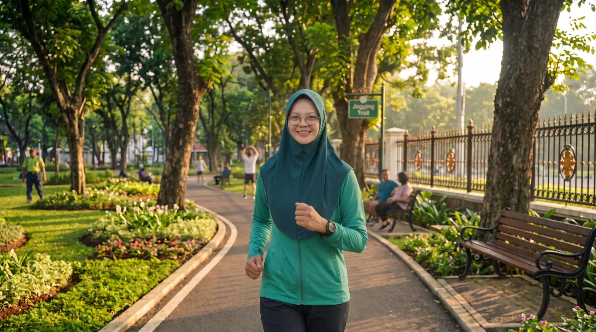
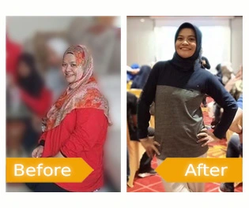
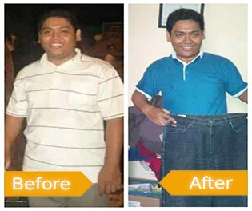
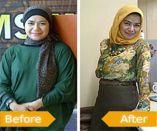
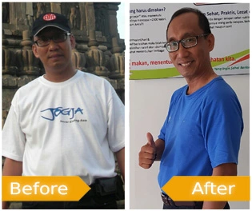
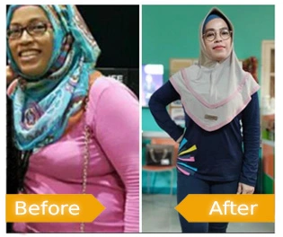
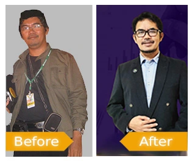
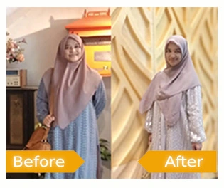
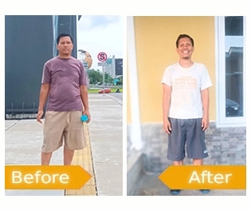

Memberikan banyak manfaat serta meningkatkan stamina dan kebugaran, sehingga membantu dalam aktifitas seharian saya sebagai ibu rumah tangga.

BERATIDEALKU / HIDUP SEHAT & AKTIF
FIT Challenge Programme
Perjalanan Menuju
Tantangan Kebugaran
Ikuti tantangan kebugaran yang menyenangkan dengan bimbingan coach profesional, dukungan komunitas, dan panduan nutrisi yang terstruktur.
Sehat, bugar, dan lebih aktif.Mulai dari langkah kecil setiap hari.
Bersama menuju
versi terbaik Anda.
versi terbaik Anda.
50+
Peserta Berhasil
3-5kg
Rata-rata Turun/Naik
4.9
Rating Kepuasan
Layanan Unggulan
Apa Yang Anda Dapatkan
Kami menyediakan layanan eCourse lengkap untuk mendukung perjalanan kebugaran Anda
Satu program
Dukungan menyeluruh
Dukungan menyeluruh
Meal Plan
Panduan menu harian sesuai kebutuhan dan target Anda
Panduan Olahraga
Rekomendasi latihan sesuai kondisi tubuh Anda
Loyalty Program
Kumpulkan poin dan tukarkan dengan hadiah menarik
Komunitas
Dukungan dari sesama pejuang hidup sehat
Bimbingan Coach
Pendampingan personal agar diet lebih efektif
Free Akses Zoom
Healthy Talk bersama Nutritionist & Dokter
Meal Replacement
Produk pengganti makanan bergizi & mengenyangkan
Tips Sehat
Informasi kesehatan & kebugaran terstruktur

PERSONAL DIET PARTNERHesty Husain
Tentang Saya
Halo, Saya Hesty
Saya seorang ibu rumah tangga dengan dua anak, berusia 46 tahun, dan berasal dari Makassar, Sulawesi Selatan.
Perjalanan saya menurunkan berat badan dimulai ketika saya memutuskan untuk mengubah pola makan, rutin berolahraga, dan menjaga waktu istirahat. Alhamdulillah, berkat konsistensi, saya berhasil menurunkan berat badan hingga 10kg. Sekarang, saya merasa jauh lebih bugar dan berenergi.
Saya paham betul bahwa perubahan gaya hidup bukanlah sesuatu yang instan, melainkan proses yang membutuhkan waktu, bimbingan, dan dukungan. Karena itu, saya ingin berbagi pengalaman dan semangat kepada siapa pun yang ingin memulai hidup sehat dan aktif.
Hesty Husain
Personal Diet Partner
Tanya Coach
Personal Diet Partner
Testimonial
Apa Kata Mereka
Kisah nyata dari mereka yang telah berhasil mengubah hidup


Stamina bertambah dan tidak mudah mengantuk. Sangat membantu saya dalam beraktifitas sehari-hari.

Saya mendapatkan bentuk tubuh yang ideal, tidak gampang lelah dan makin berstamina saat olahraga.

Saya merasakan kebugaran yang luar biasa dan memudahkan saya dalam beraktifitas dalam bekerja.

Meningkatkan kebugaran dan stamina lebih enerjik dalam mendukung aktifitas saya sebagai seorang dokter spesialis.

Saya merasakan kebugaran dan stamina yang luar biasa dan mendukung aktifitas keseharian saya sebagai seorang dokter spesialis.

Mengikuti program pola makan, saya berhasil turun berat dengan cara tetap sehat dan bugar.

Saya merasakan kebugaran yang luar biasa dan memudahkan saya dalam beraktifitas dalam bekerja.
FIT Challenge Programme
Waktunya untuk
Waktunya untuk
Berubah!
Rasakan perubahan kebugaran Anda dengan mengikuti tantangan yang menyenangkan, didukung video eCourse lengkap dan terstruktur.
LANGKAH BARU ANDA DIMULAI DI SINI
- Panduan eCourse lengkap & terstruktur
- Dukungan komunitas aktif
- Bimbingan coach profesional